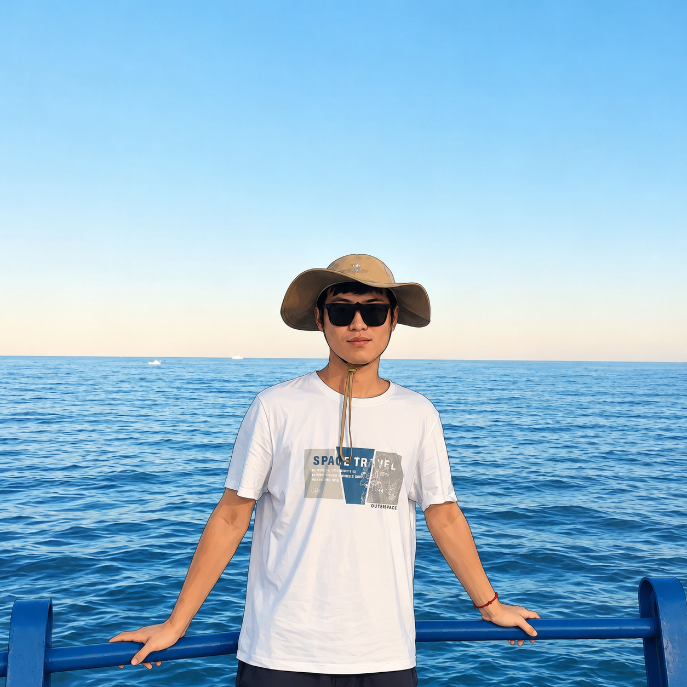
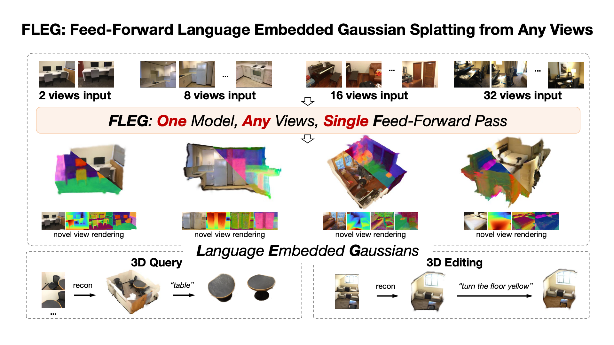
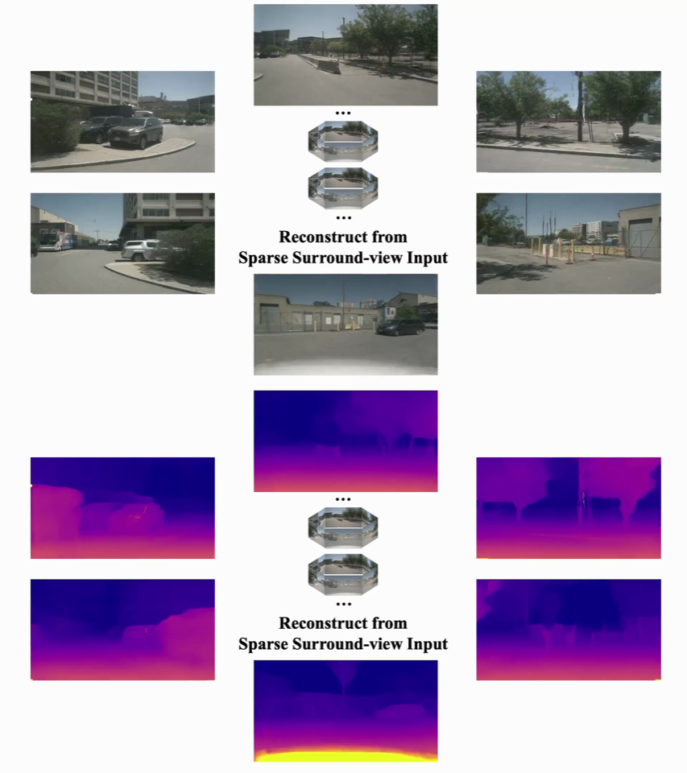
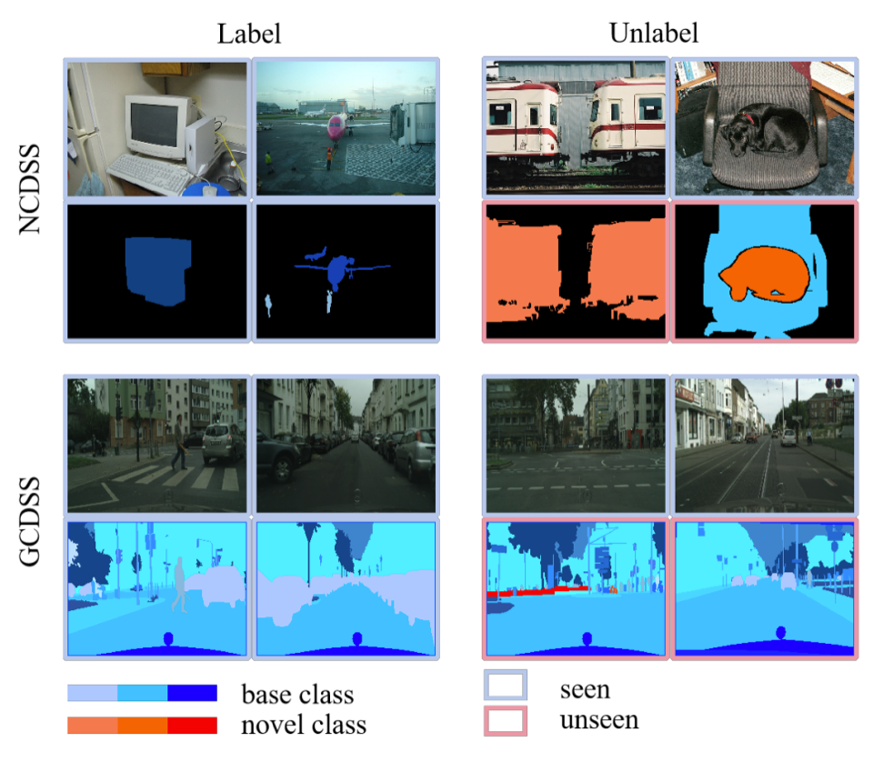

|
Qijian Tian I'm a fourth-year Ph.D. student in Computer Science at Shanghai Jiao Tong University (SJTU), advised by Prof. Lizhuang Ma in the Digital Media & Computer Vision Laboratory (DMCV). I also receive supervision from Dr. Xin Tan, who is based at East China Normal University (ECNU). Prior to starting my Ph.D., I received my Bachelor's degree in Computer Science from Beihang University (BUAA). I also worked as an intern at Baidu. |
 |
Research
My research interests involve multimodal large language models (MLLM) and 3D vision. 2026.08: I am currently looking for collaboration / internship opportunities related to MLLM. Feel free to contact me! |
|
 |
FLEG: Feed-Forward Language Embedded Gaussian Splatting from Any Views via Compact Semantic Representation
ECCV 2026
project page /
arXiv
A feed-forward network that reconstructs language-embedded 3D Gaussians from arbitrary uncalibrated and unposed images with a compact semantic representation that avoids per-Gaussian language embedding and significantly reduces storage overhead. |
|
|
S2D: Sparse to Dense Lifting for 3D Reconstruction with Minimal Inputs
CVPR 2026
project page /
arXiv
A sparse-to-dense lifting pipeline that bridges point clouds and 3D Gaussian Splatting via a one-step diffusion model, enabling high-quality 3DGS reconstruction with minimal inputs. |
|
 |
DrivingForward: Feed-forward 3D Gaussian Splatting for Driving Scene Reconstruction from Flexible Surround-view Input
AAAI 2025
project page /
arXiv
A feed-forward Gaussian Splatting model that reconstructs driving scenes from flexible sparse surround-view input. |

|
DANIM: Domain Adaptation Network with Intermediate Domain Masking for Night-time Scene Parsing
Pattern Recognition 2025
A novel domain adaptation network for night-time scene parsing that bridges the day-night domain gap using an intermediate domain. |
|
 |
Generalized Category Discovery in Semantic Segmentation
arXiv 2023
arXiv
A novel setting called Generalized Category Discovery in Semantic Segmentation (GCDSS). Given prior knowledge from a labeled set of base classes, our method aims to segment unlabeled images that contain pixels of the base class or novel class. |
|
This homepage's source code is from Jon Barron's website. |